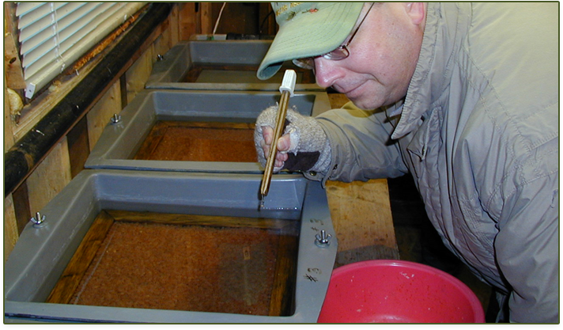
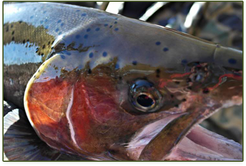
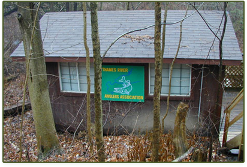

THAMES RIVER ANGLERS ASSOCIATION PROJECTS
"Hands-On Environmentalism" is what we do..."
This is what sets the Thames River Anglers Association apart from other clubs and organizations. You'll find us right in the water clearing obstructions from streams, measuring returning salmonids & taking scale samples for DNA analysis, education through trout hatchery tours & stream walks, being a voice for the Thames River watershed & its inhabitants, and the list goes on.

Current & Past TRAA Projects

Salmonid Monitoring Program
Spring 2013 will be our fourth year of this 5-year project. Here's an overview of what happened over a few weekends in the Spring of 2012 when TRAA members and personnel from the Upper Thames River Conservation Authority (UTRCA) waded in for Year 3 of our 5-year Salmonid Tagging and Monitoring Program
...Read More

TRAA Trout Hatchery
Rearing both brown and rainbow trout. The TRAA first began rearing rainbow trout in an outdoor upwelling incubation box back in 1986. Since then we've successfully taken on both brown trout and brook trout eggs
...Read MoreProject Archives
MEMBERSHIPS ARE DUE!
You get to be a TRAA member for a whole year for only $25! Your membership also adds another voice to our efforts in protecting and enhancing aquatic habitats in the London & area community. You’ve taken a lot of enjoyment from this unique fishery. It’s time to give back by being a part of the solution.
FUNDRAISING
Efforts are underway to get the funding we need to continue many of the TRAA's most vital projects:


Improvements to the TRAA Trout Hatchery
Continuation of the Salmonid Monitoring Program
Funding the Komoka Creek Hydrological Study
Please email us if you'd like to take an active role in raising the funds needed for these and other important TRAA activities